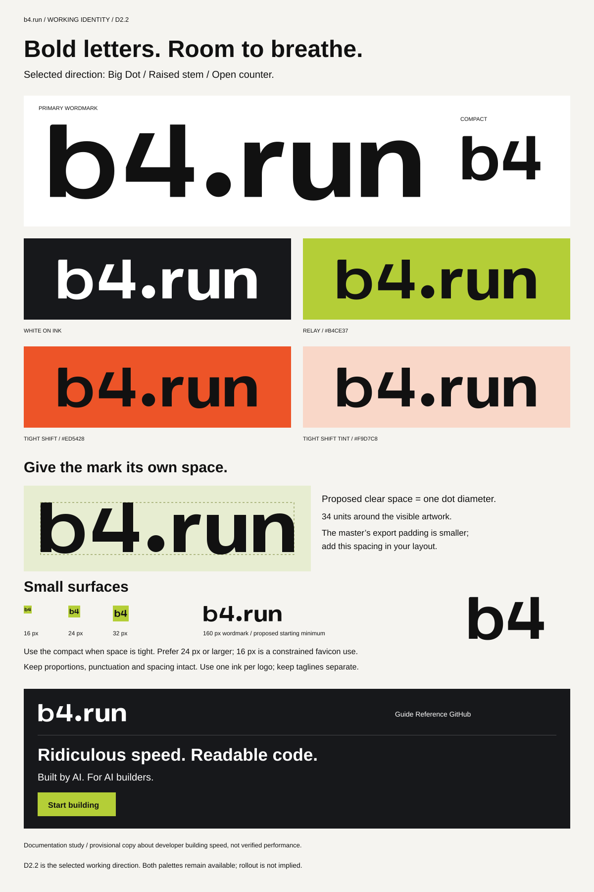

D2.2 / Approved visual system / September 2026
Paper Relay
Paper surfaces. Ink typography. A deliberate yellow-green accent. The b4.run brand kit brings the approved visual system together with the original D2.2 masters.
Paper surfaces. Ink typography. A deliberate yellow-green accent. The b4.run brand kit brings the approved visual system together with the original D2.2 masters.
The primary wordmark is b4.run; the separately proportioned compact is b4. Pronounce the name “bee-four dot run.” Both use custom vector geometry.
Preserve the Big Dot, raised stem of the 4, open counters, and letter spacing. Use one ink per logo, and keep taglines separate.
Allow one dot diameter of clear space around the visible wordmark: 34 master units, or about 10.4 px at a 160 px export width. The SVG padding is smaller than this margin.
Start at 160 px for the wordmark and 24 px for the compact. Allow roughly one-third of the compact’s visible letter height as clear space; favicons are a constrained exception.
Use ink on paper, white, and Relay fields. Use white on dark fields. Never stretch, outline, redraw, recolor individual letters, or replace the period.
#F5F4F0#111111#B4CE37#17181BUse Relay tint #E7EDD1 for quiet selection and informational backgrounds. Keep body text neutral; dark ink on Relay has 10.63:1 contrast. Relay on paper has only 1.61:1 and is decorative there.
Normal text needs at least 4.5:1 contrast. Essential boundaries and focus indicators need at least 3:1. Verify real interaction states; palette choices alone do not establish interface accessibility.
600–700 for headings; 400–500 for reading and controls. Start body text at 16 px with a 1.7–1.85 line height and a 60–75 character reading measure.
Use for code, commands, paths, and short technical labels. Start code at 13–14 px, and let long lines scroll within their panel.
Font sources and licensesSpacing: 8 / 16 / 24 / 32 / 48 / 72. Use generous margins, thin rules, and square panels. A separate dot may provide a graphic focal point; keep it clear of text and logo clear space.
Logo geometry, approved colors, clear space, typography, and dot graphics. This is a brand reference with neutral specimens, not proposed homepage messaging.

These PNGs use fixed CSS dimensions at 100% browser zoom. A 120 px wordmark or 16 px icon is constrained use; verify legibility on the target display and in its actual surroundings.
Orange #ED5428 and tint #F9D7C8 remain at their existing URLs for compatibility. They are archived alternatives, not a second approved default.
{kind=link}
{kind=link}
{kind=link}
{kind=link}
{kind=link}
{kind=link}
{kind=link}
{kind=link}
{kind=link}
{kind=link}